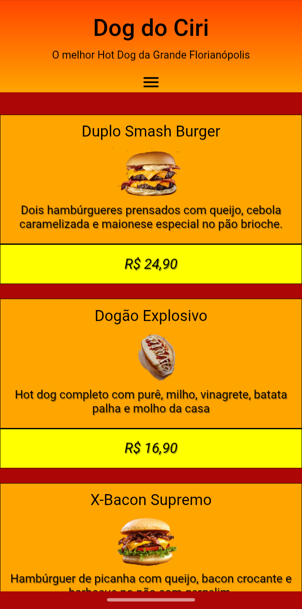

Projeto Cardápio
Este é um projeto de site de cardápio online, criado com foco em praticar HTML5, CSS3 e media queries para responsividade.
O objetivo foi simular uma lanchonete fictícia chamada "Dog do Ciri", com um design simples, intuitivo e adaptado para dispositivos móveis

link